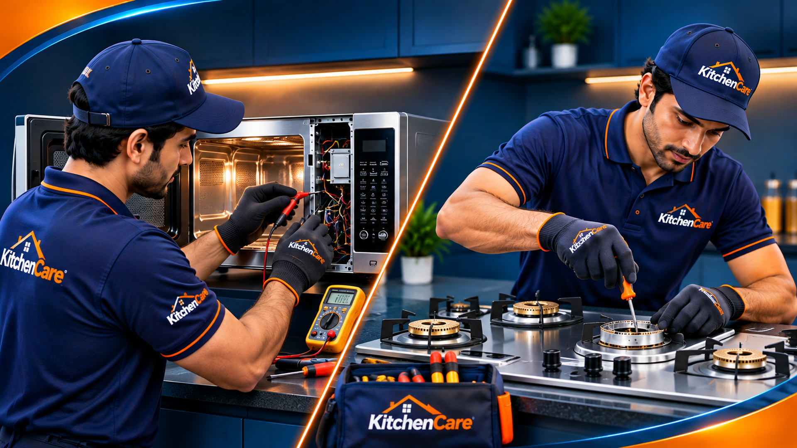
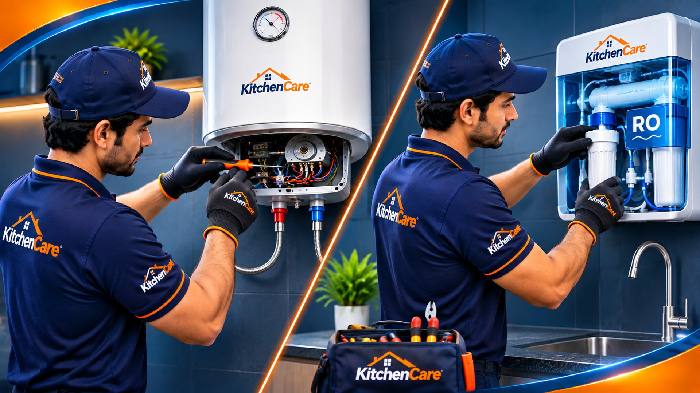
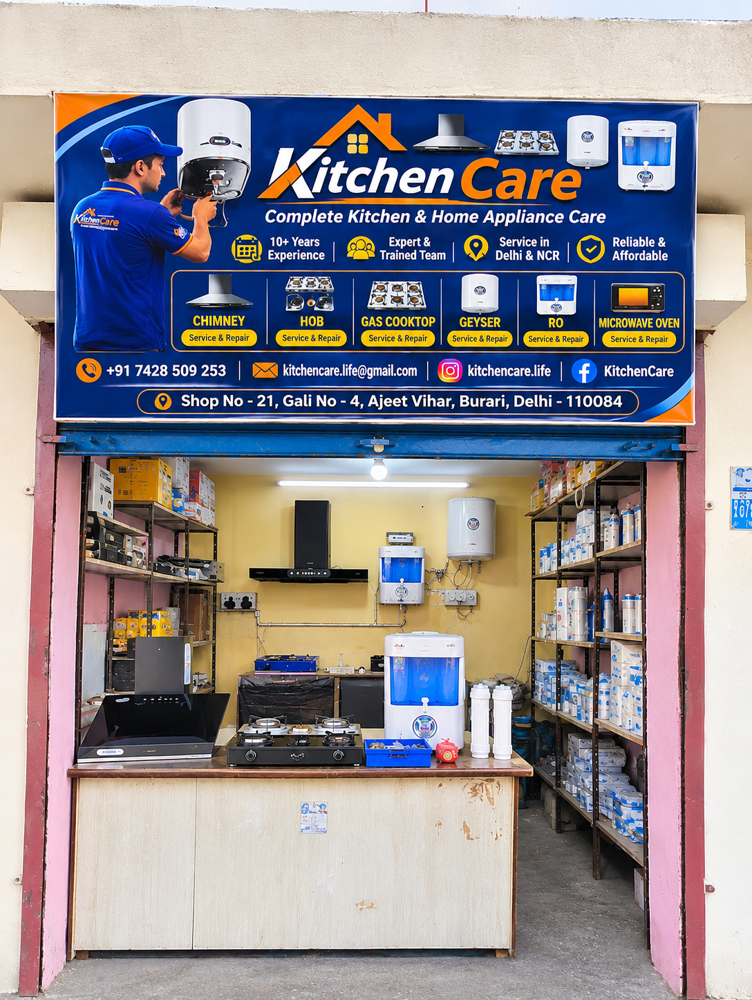
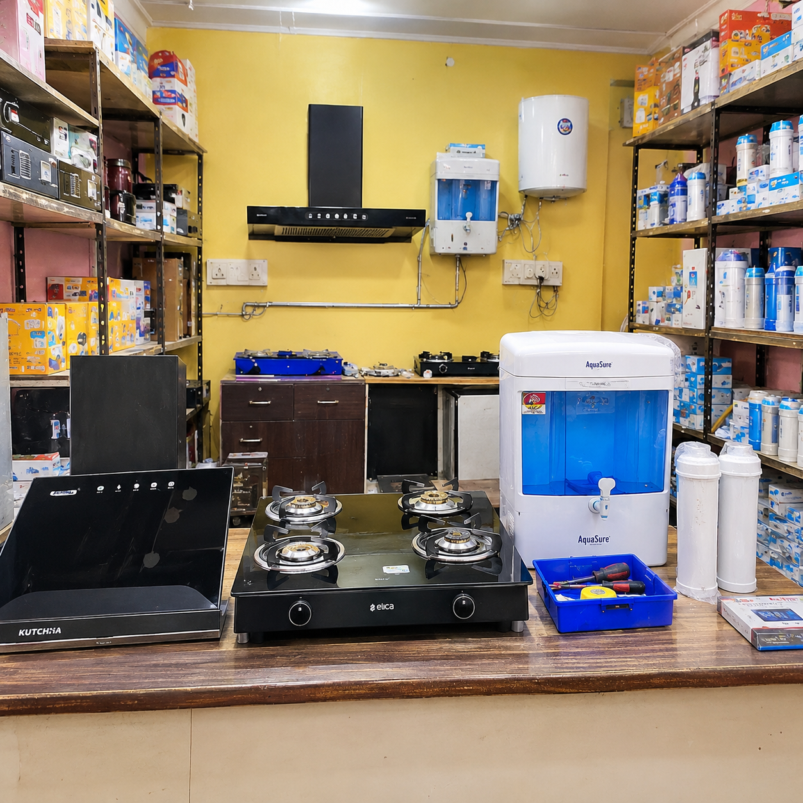

Kitchen Chimney Repair & Service
Chimney repair, cleaning, installation and maintenance for better suction and smooth operation.
- Motor, rotor and PCB repair
- Noise and suction problem solutions
- Chimney cleaning and installation
DELHI & NCR APPLIANCE SERVICE
Chimney, hob, gas cooktop, microwave, RO and geyser service by an experienced, trained technician team.
WHAT WE DO
Professional support for essential kitchen and home appliances across Delhi.
Chimney repair, cleaning, installation and maintenance for better suction and smooth operation.
Gas hob troubleshooting, servicing and compatible part replacement for everyday cooking appliances.
Repair and maintenance for domestic gas cooktops, including burner, ignition and fitting issues.
Microwave oven inspection and repair for heating, power, control and operating issues.
RO water purifier service, filter and membrane replacement, and water-flow troubleshooting.
Geyser repair and maintenance to address heating, water-flow and routine cleaning concerns.
KITCHENCARE SERVICE
From kitchen chimney repair near you to RO service, hob repair, microwave repair and geyser maintenance, KitchenCare helps with practical appliance-care solutions.
Contact KitchenCare →



ABOUT KITCHENCARE
KitchenCare provides repair, servicing, installation and maintenance for kitchen and home appliances. With 10+ years of experience and a trained technician team, we focus on dependable service, quality workmanship and affordable solutions.
OUR SERVICE LOCATIONS
Looking for chimney service near me, RO repair near me, hob service near me or geyser repair near me? KitchenCare offers chimney service near me, kitchen chimney repair, RO service near me, RO repair, hob service, gas cooktop repair, microwave oven repair and geyser service across Delhi and selected NCR locations. Contact us to confirm service availability in your locality.
Burari, Sant Nagar, Civil Lines, Model Town, Mukherjee Nagar, Kamla Nagar, Kingsway Camp, Timarpur, Wazirabad, Adarsh Nagar, Azadpur, Jahangirpuri, Shalimar Bagh, Ashok Vihar, Gujranwala Town, Rohini, Pitampura, Prashant Vihar, Rani Bagh, Saraswati Vihar, Shakurpur, Mangolpuri, Sultanpuri, Narela, Bawana, Badli, Rithala, Kirari, Keshav Puram.
Shahdara, Yamuna Vihar, Bhajanpura, Khajuri Khas, Karawal Nagar, Gokalpuri, Sonia Vihar, Maujpur, Babarpur, Seelampur, Welcome, Jafrabad, Ghonda, Nand Nagri, Dilshad Garden, Laxmi Nagar, Preet Vihar, Nirman Vihar, Mayur Vihar, Patparganj, IP Extension, Anand Vihar, Karkardooma, Krishna Nagar, Gandhi Nagar, Geeta Colony, Shakarpur, Mandawali, Vasundhara Enclave, New Ashok Nagar, Vivek Vihar.
Rajouri Garden, Punjabi Bagh, Paschim Vihar, Janakpuri, Tilak Nagar, Vikaspuri, Uttam Nagar, Hari Nagar, Subhash Nagar, Tagore Garden, Moti Nagar, Kirti Nagar, Ramesh Nagar, Nangloi, Mundka, Meera Bagh, Shadipur, Karol Bagh, Connaught Place, Paharganj, Patel Nagar, Rajendra Nagar, Jhandewalan, Daryaganj, Chandni Chowk, Sadar Bazaar, Kashmere Gate, ITO, Mandi House, Pragati Maidan.
Hauz Khas, Green Park, Malviya Nagar, Saket, Mehrauli, Chhatarpur, Vasant Kunj, Munirka, Kishangarh, Sultanpur, Ghitorni, Aya Nagar, Neb Sarai, Panchsheel Park, Greater Kailash, Kailash Colony, Defence Colony, Lajpat Nagar, Kalkaji, Govindpuri, Nehru Place, Okhla, Jasola, Sarita Vihar, Badarpur, New Friends Colony, Jangpura, Jamia Nagar, Shaheen Bagh, CR Park, Alaknanda, Dwarka, Palam, Dabri, Mahavir Enclave, Najafgarh, Chhawla, Matiala, Bijwasan, Kapashera.
Chanakyapuri, Vasant Vihar, RK Puram, Dhaula Kuan, Moti Bagh, Sarojini Nagar, Safdarjung, Jor Bagh, Lodhi Estate, India Gate, Gole Market, Naraina, Delhi Cantonment, Anand Niketan, Shanti Niketan, West End.
Gurugram: DLF Phases 1–5, Sohna Road, Golf Course Road, Palam Vihar, Sector 14, Sector 31, Sector 56, Manesar.
Noida: Sector 18, 50, 62, 63, 75, 76, 100, 137, 150.
Ghaziabad: Indirapuram, Vaishali, Vasundhara, Kaushambi, Raj Nagar, Raj Nagar Extension, Crossings Republik, Sahibabad, Loni.
Faridabad: NIT, Sectors 15, 16, 21, 28, 37, Greater Faridabad, Neharpar, Ballabhgarh.
Service availability may vary by location. Please call or WhatsApp to confirm service in your area.
GET IN TOUCH
Call or WhatsApp KitchenCare for service enquiries across Delhi & NCR.